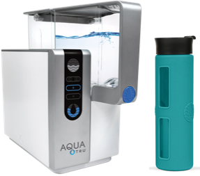
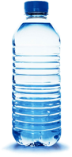

Customer Service: 800-220-6570
ORDER NOW
Customer Service: 800-220-6570
"AquaTru is the only water purification system I have ever recommended."
Erin Brockovich
Clean Water Advocate portrayed in the blockbuster film Erin Brockovich
No plumbing or
installation required
The first and only countertop reverse osmosis water purifier that is certified to create bottled-quality water from your tap.
Ultra Reverse Osmosis™
Technology
AquaTru's exclusive, patent pending Ultra Pure Reverse Osmosis Technology is the gold standard in water purification technology.
Watch The Video
AquaTru is certified to remove 76 toxic chemicals including:
Click to view certification
LEARN MORE ABOUT
AQUATRU
DID YOU KNOW TAP WATER IN THE U.S.A CAN COMPROMISE YOUR HEALTH?
3 out of 4 homes in the US have tap water containing contaminants that exceed safe water limits.
According to a recent article in National Geographic Magazine, "Depending on the source of contamination and the exposure, health effects include neurological problems and developmental disabilities in children (lead), interference with hormones (perchlorates), and increased risk of cancers of the skin, bladder, and kidney (arsenic)."
WHAT'S WRONG WITH TYPICAL FRIDGE & PITCHER FILTERS?
They are filters, not purifiers. Most pitcher and refrigerator filters are only designed to make your water taste better, but not necessarily safer. These filters remove simple chemicals like chlorine, but may leave behind a toxic chemical concoction for you to drink.
AquaTru is certified to remove over 15x more contaminants than the best selling pitcher water filter.
WHAT'S WRONG WITH BOTTLED WATER?
Over 73 billion half-liter bottles of water are consumed in the US per year. Of those, 50 billion bottles end up in landfills or polluting our waterways.
It takes over 17 million barrels of oil to produce the plastic required for bottles of water consumed by Americans in a year, which is enough oil to fuel more than 1 million cars for an entire year.
Over 90% of the major bottled brands of water contain plastic microparticles. Plus, toxins can leach from the bottles into your water over time.
Taste
AquaTru provides the best water you’ve ever tasted or your money back.
Quality
Unlike regular pitcher or refrigerator filters, AquaTru takes out virtually all toxic chemicals in your tap water.
Environmentally Kind
AquaTru is certified to remove 76 contaminants regulated by the Environmental Protection Agency.
Ease
No heavy bottles to carry around or filters to change every few months.
AquaTru
.029¢
(½ litre)
Bottled Water
$1.99
(½ litre)
Quantum Buff
August 15, 2017
AquaTru is a truly helpful and game-changing product! Our family takes healthy water seriously.
Valentyn
December 4, 2018
We’ve had our AquaTru system for a little over a week now and I can truly say that it is fantastic! Pure, clean water, easy use, and no more trips to the Glacier water machines!
Nancy D
January 1, 2019
I purchased this in May of 2018. It works and I have had no problems with it. I contacted AquaTru with a couple of questions shortly after receiving it and they were quick to respond and were very supportive.
Andy Ritenour
December 4, 2018
Without a doubt the best tasting water I have ever had. I use it exclusively for drinking water, ice, and cooking. Pure water tastes amazing.
AquaTru's Ultra Reverse Osmosis Technology is a 4-Stage
purification process:
See the Reserve Osmosis Technology in Action
Save Money. Drink Safely. Save the Environment. AquaTru
ORDER AQUATRU
The best water you've ever tasted or your money back.